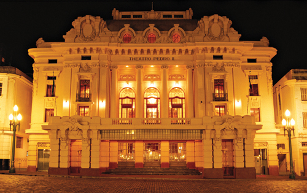

Diante de sua arquitetura, é difícil passar pelo prédio sem deixar de contemplá-lo por alguns instantes. "Passo por aqui todos os dias, e não deixo de olhar e admirar o prédio. Para mim é o lugar mais exuberante da cidade", diz a empresária Sara Lima.
Mais à frente, um grupo de universitários faz fotos em frente ao prédio. "Somos de São Paulo e não há vir a Ribeirão e não conhecer o Pinguim, famoso pelo chope, e o Theatro Pedro II, pela sua importância cultural", diz Luciano Cavalcanti, estudante de psicologia.

No banco da praça, o aposentado Júlio Casagrande, de 68 anos, contempla o prédio. "Venho aqui todos os dias e não me canso de fitar o "Pedrão". Sua presença nos dá uma sensação de força. É um orgulho para a cidade ter algo tão belo e de tamanha importância para o Brasil", afirma.
O projeto original do arquiteto Hypoólito Gustavo Pujol Junior foi inspirado no Teatro de Ópera de Paris. Idealizado e construído pelo empresário João Meira Júnior, o prédio foi um presente dado por ele à cidade na época de ouro do café. O interior do prédio apresenta características do Iluminismo francês e do Art déco; na fachada fortes influências do Barroco italiano.